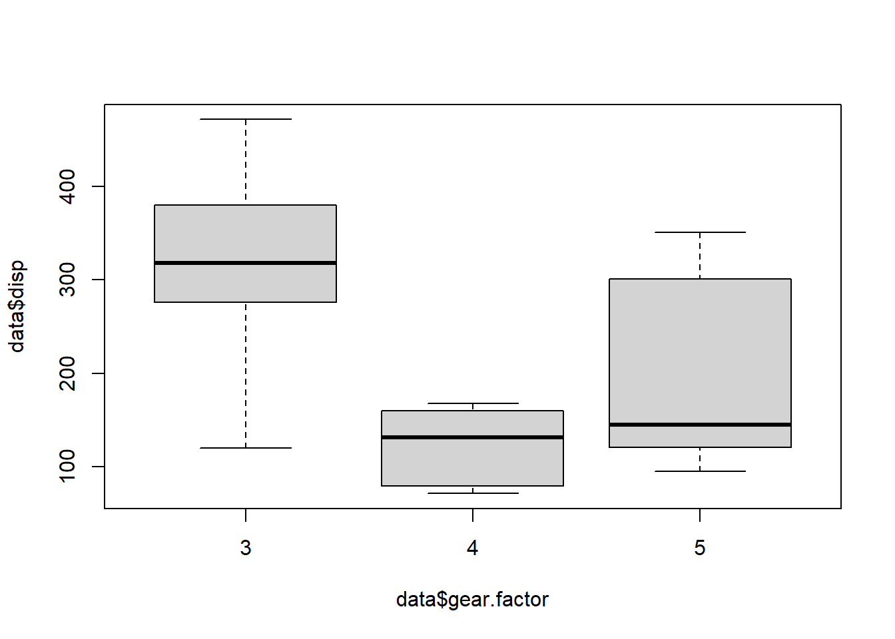

Getting started
Once you have installed R and Rstudio, we can get started with R!
IMPORTANT : R is case sensitive. This means that mean(variable) is not the same as Mean(variable)!
Overview
The topics in this document are:
Packages
For a lot of R functions, additional libraries need to be loaded.
This can be done with:
library(lattice)Sometimes the library needs to be installed first:
install.packages(lattice)
library(lattice)Installing a library only needs to be done once. Loading the library must be done every time you start R.
In the bottom right pane, you can find the tab Packages. Here you can find help on files about the packages. Help about a specific function can also be found with ?:
?xyplot
Importing data sets
How do I get my data in R?
SPSS file
- Load the library foreign
library(foreign)- Load data from spss using the function read.spss
data <- read.spss("C:/Documents/data.sav", to.data.frame = TRUE)
Excel file
- Load the library readxl
library(readxl)- Load data from spss using the function read_excel
data <- read_excel("C:/Documents/data.xlsx")
Note 1 For R to recognize the folder you need to use forward slashes (/) instead of backward slashes (\)
Note 2 Pay attention to the name you give your data set. You want it to be distinct, but don’t make it too long!
Base R vs Tidyverse
Base is the base package in R, that contains a lot of the basic functions. Examples are summary() to get some summary statistics and plot() to make plots.
There exists a collection of packages, together called the Tidyverse, that allows you to do a lot of the base R things in a slightly different way. For example, the package dplyr is used for data management and with ggplot() you can make beautiful graphs. The Tidyverse has a bit of different style of coding (it has its own ‘grammar’) than most R functions.
Some people prefer working with their data with the Tidyverse, other prefer base R. In these tutorials, I will use base R for the data management and graphs in the Getting Started tutorials, and show some Tidyverse functions in the Advanced options tutorials.
Small example
In the two code chunks below, I demonstrate the difference between the two styles. The codes give the means of an outcome (weight of chickens) for different groups (feed type).
It is not necessary to understand the code yet! This example is just to demonstrate how two different pieces of code, give the same result.
With base R
data(chickwts)
aggregate(chickwts$weight, list(chickwts$feed), FUN=mean) ## Group.1 x
## 1 casein 323.5833
## 2 horsebean 160.2000
## 3 linseed 218.7500
## 4 meatmeal 276.9091
## 5 soybean 246.4286
## 6 sunflower 328.9167
With dplyr from the Tidyverse
library(dplyr)
data(chickwts)
chickwts %>%
group_by(feed) %>%
summarize(Mean = mean(weight)) ## # A tibble: 6 x 2
## feed Mean
## <fct> <dbl>
## 1 casein 324.
## 2 horsebean 160.
## 3 linseed 219.
## 4 meatmeal 277.
## 5 soybean 246.
## 6 sunflower 329.The main difference between the styles, is that with the dplyr code, things elements of the code are added stepwise, whereas with the base R, everything is handled at the same time.
Data management
We want to investigate and explore the data set before we perform our analyses. Often we also need to perform some data manipulation steps first.
Explore data
Let’s explore a dataset.
We will use a standard data set available in R (mtcars). I will name this dataset “data”
data(mtcars)
data <- mtcarsWith the function head, we can print the first couple of rows; check out the names of the variables and the first entries.
head(data)## mpg cyl disp hp drat wt qsec vs am gear carb
## Mazda RX4 21.0 6 160 110 3.90 2.620 16.46 0 1 4 4
## Mazda RX4 Wag 21.0 6 160 110 3.90 2.875 17.02 0 1 4 4
## Datsun 710 22.8 4 108 93 3.85 2.320 18.61 1 1 4 1
## Hornet 4 Drive 21.4 6 258 110 3.08 3.215 19.44 1 0 3 1
## Hornet Sportabout 18.7 8 360 175 3.15 3.440 17.02 0 0 3 2
## Valiant 18.1 6 225 105 2.76 3.460 20.22 1 0 3 1
Obtain the summaries of each variable
The numbers of missings NA are also reported.
summary(data)## mpg cyl disp hp
## Min. :10.40 Min. :4.000 Min. : 71.1 Min. : 52.0
## 1st Qu.:15.43 1st Qu.:4.000 1st Qu.:120.8 1st Qu.: 96.5
## Median :19.20 Median :6.000 Median :196.3 Median :123.0
## Mean :20.09 Mean :6.188 Mean :230.7 Mean :146.7
## 3rd Qu.:22.80 3rd Qu.:8.000 3rd Qu.:326.0 3rd Qu.:180.0
## Max. :33.90 Max. :8.000 Max. :472.0 Max. :335.0
## drat wt qsec vs
## Min. :2.760 Min. :1.513 Min. :14.50 Min. :0.0000
## 1st Qu.:3.080 1st Qu.:2.581 1st Qu.:16.89 1st Qu.:0.0000
## Median :3.695 Median :3.325 Median :17.71 Median :0.0000
## Mean :3.597 Mean :3.217 Mean :17.85 Mean :0.4375
## 3rd Qu.:3.920 3rd Qu.:3.610 3rd Qu.:18.90 3rd Qu.:1.0000
## Max. :4.930 Max. :5.424 Max. :22.90 Max. :1.0000
## am gear carb
## Min. :0.0000 Min. :3.000 Min. :1.000
## 1st Qu.:0.0000 1st Qu.:3.000 1st Qu.:2.000
## Median :0.0000 Median :4.000 Median :2.000
## Mean :0.4062 Mean :3.688 Mean :2.812
## 3rd Qu.:1.0000 3rd Qu.:4.000 3rd Qu.:4.000
## Max. :1.0000 Max. :5.000 Max. :8.000
Obtain the summaries of one variable
With the $ symbol we access a variable in a data set.
summary(data$mpg)## Min. 1st Qu. Median Mean 3rd Qu. Max.
## 10.40 15.43 19.20 20.09 22.80 33.90
Obtain the variable names
names(data)## [1] "mpg" "cyl" "disp" "hp" "drat" "wt" "qsec" "vs" "am" "gear"
## [11] "carb"
Look at the type of variables in the data:
Numeric - Factor - character - Integer - etc
str(data)## 'data.frame': 32 obs. of 11 variables:
## $ mpg : num 21 21 22.8 21.4 18.7 18.1 14.3 24.4 22.8 19.2 ...
## $ cyl : num 6 6 4 6 8 6 8 4 4 6 ...
## $ disp: num 160 160 108 258 360 ...
## $ hp : num 110 110 93 110 175 105 245 62 95 123 ...
## $ drat: num 3.9 3.9 3.85 3.08 3.15 2.76 3.21 3.69 3.92 3.92 ...
## $ wt : num 2.62 2.88 2.32 3.21 3.44 ...
## $ qsec: num 16.5 17 18.6 19.4 17 ...
## $ vs : num 0 0 1 1 0 1 0 1 1 1 ...
## $ am : num 1 1 1 0 0 0 0 0 0 0 ...
## $ gear: num 4 4 4 3 3 3 3 4 4 4 ...
## $ carb: num 4 4 1 1 2 1 4 2 2 4 ...
Basic data manipulation
Rename variables
names(data)[names(data) == "carb"] <- "CARB"
Make a subset of your data
Tip! Create a new data set with a new name. Otherwise you might lose important information in your data.
Remove observations with missings (NA) in “mpg” and “cyl”
data2 <- subset(data, !is.na(data$mpg) & !is.na(data$cyl))
Remove observation above a certain threshold
Make a new dataset, including only mpg values > 20. (Don’t forget the comma in the code!)
data2 <- data[data$mpg > 20, ]
Remove duplicates
This can be used if there are multiple measurement per patient, but you want to keep only the first.
data.short <- data[!duplicated(data$gear),]
Remove variables
data2 <- subset(data, select = -c(mpg, cyl))
Keep variables
data2 <- subset(data, select = c(mpg, cyl))
More options for data management can by found in the Advanced options.
Graphs
Make a simple histogram (mpg = continuous variable)
hist(data$mpg)
Make a simple scatter plot (mpg & disp = continuous variables)
plot(data$mpg ~ data$disp)Make a simple boxplot (mpg = continuous variable, cyl = categorical variable)
boxplot(data$mpg ~ data$cyl)Improve the scatterplot by changing the color, adding a title, etc.
plot(data$mpg ~ mtcars$disp, xlab = "Disp", ylab = "Mpg",
xlim = c(75, 475), ylim = c(10, 35),
main = "Scatterplot Mpg - Disp", col = "red", pch = 20, cex = 1.5)
For two plots next to each other we can use the function par(mfrow = c(1,2))
par(mfrow = c(1,2))
plot(data$mpg ~ data$disp)
plot(data$mpg ~ mtcars$disp, xlab = "Disp", ylab = "Mpg",
xlim = c(75, 475), ylim = c(10, 35),
main = "Scatterplot Mpg - Disp", col = "red", pch = 20, cex = 1.5)To learn how to use ggplot2 for graphics, you can go to Advanced graphs.
Descriptives
Obtain descriptives for continuous variables
mean (sd)
mean(data$mpg)## [1] 20.09062sd(data$mpg)## [1] 6.026948median (IQR)
median(data$mpg)## [1] 19.2quantile(data$mpg, probs = c(0.25, 0.75))## 25% 75%
## 15.425 22.800
Obtain descriptives for categorical variables
Frequencies
table(data$cyl)##
## 4 6 8
## 11 7 14Crosstabs
table(data$cyl, data$vs)##
## 0 1
## 4 1 10
## 6 3 4
## 8 14 0
Statistical tests
T-test
With a t-test, we compare a normally distributed continuous variable between two groups. In the data “am” is a grouping variable (0/1). Let’s explore this variable with table:
table(data$am)##
## 0 1
## 19 13“drat” is a continuous variable. Is it normally distributed?
par(mfrow = c(1,2))
hist(data$drat)
qqnorm(data$drat)
qqline(data$drat, col = "steelblue")This looks pretty normal, so we can use a t-test to analyze these data.
t.test(drat ~ am, data = data)##
## Welch Two Sample t-test
##
## data: drat by am
## t = -5.6461, df = 27.198, p-value = 5.267e-06
## alternative hypothesis: true difference in means between group 0 and group 1 is not equal to 0
## 95 percent confidence interval:
## -1.0411183 -0.4862501
## sample estimates:
## mean in group 0 mean in group 1
## 3.286316 4.050000The output provides us with the p-value of the test, but also the 95% confidence interval and the mean in both groups.
It is possible to save the test as an r object (named “test”) and extract the p-value from it.
test <- t.test(drat ~ am, data = data)
test$p.value## [1] 5.266742e-06
Mann-Whitney U test
When the continuous variable is not normally distributed, we use the Mann-Whitney U test (or Wilcoxon Rank Sum test). The variable “mpg” is not normally distributed as we can see by the graphs.
par(mfrow = c(1,2))
hist(data$disp)
qqnorm(data$disp)
qqline(data$disp, col = "steelblue")
So, we use the code wilcox.test
wilcox.test(disp ~ am, data = data)##
## Wilcoxon rank sum test with continuity correction
##
## data: disp by am
## W = 214, p-value = 0.0005493
## alternative hypothesis: true location shift is not equal to 0The p-value is <0.05, so we can reject H0.
ANOVA
When we want to compare a continuous variable in more than 2 groups, we can use an ANOVA. For this test, we assume that the continuous marker follows a normal distribution. The variable “gear” has three groups:
table(data$gear)##
## 3 4 5
## 15 12 5We will use ANOVA to test if “drat” is similar over the “gear” groups. We visualize the data first:
boxplot(data$drat ~ data$gear)There appears to be a big difference, especially in group 3. For the ANOVA procedure in R it is better if the grouping variable is a “factor” instead of “numeric”, so we make a new variable: gear.factor.
str(data$gear)## num [1:32] 4 4 4 3 3 3 3 4 4 4 ...data$gear.factor <- as.factor(data$gear)
str(data$gear.factor)## Factor w/ 3 levels "3","4","5": 2 2 2 1 1 1 1 2 2 2 ...aov1 <- aov(drat ~ gear.factor, data = data)
summary(aov1)## Df Sum Sq Mean Sq F value Pr(>F)
## gear.factor 2 6.133 3.0667 32.59 3.82e-08 ***
## Residuals 29 2.729 0.0941
## ---
## Signif. codes: 0 '***' 0.001 '**' 0.01 '*' 0.05 '.' 0.1 ' ' 1The p-value is highly significant. We can perform a post-hoc test, to see which groups are different from each other. With Tukey we adjust the p-value to correct for multiple testing.
TukeyHSD(aov1)## Tukey multiple comparisons of means
## 95% family-wise confidence level
##
## Fit: aov(formula = drat ~ gear.factor, data = data)
##
## $gear.factor
## diff lwr upr p adj
## 4-3 0.9106667 0.6172574 1.2040759 0.0000001
## 5-3 0.7833333 0.3921210 1.1745457 0.0000856
## 5-4 -0.1273333 -0.5305858 0.2759191 0.7181847Group 3 is indeed different from 4 and 5.
Kruskal-Wallis test
The non-paramtric version of the ANOVA is the Kruskal-Wallis test.
boxplot(data$disp ~ data$gear.factor)
kruskal.test(disp ~ gear.factor, data = data)##
## Kruskal-Wallis rank sum test
##
## data: disp by gear.factor
## Kruskal-Wallis chi-squared = 16.578, df = 2, p-value = 0.0002513The groups of gear are also significantly different for disp values.
Chi-squared test
To see if two binary or categorical variables are associated, we can use the chi-squared test.
The variables “vs” and “am” are both binary. With table() we can make a crosstab of the variables.
tab <- with(data, table(vs, am))
tab## am
## vs 0 1
## 0 12 6
## 1 7 7We now estimate the chi-squared statistic on this table:
chisq.test(tab)##
## Pearson's Chi-squared test with Yates' continuity correction
##
## data: tab
## X-squared = 0.34754, df = 1, p-value = 0.5555The p-value is > 0.05.
Correlations
Correlations are used for two continuous variables. We already made a scatterplot of “mpg” and “disp”.
plot(data$mpg ~ data$disp)
There seems to be a strong negative correlation between the variables. Is it significant?
cor.test(data$disp, data$mpg, method = "spearman")##
## Spearman's rank correlation rho
##
## data: data$disp and data$mpg
## S = 10415, p-value = 6.37e-13
## alternative hypothesis: true rho is not equal to 0
## sample estimates:
## rho
## -0.9088824Since “mpg” is not normally distributed, we use the method = "spearman" version of the test. For the Pearson correlation, use method = "pearson". The correlation is -0.9 and highly significant.
Regression
Linear regression
In regression we like to explain how one variable (x) influences changes in a second variable (y). Let’s start with a scatterplot for “drat” and “disp”:
plot(drat ~ disp, data = data)
With the regression model we can estimate how unit-value in x (disp) impact a change in y (drat): The model is estimated with lm(). summary() prints a summary of the model.
m1 <- lm(drat ~ disp, data = data)
summary(m1)##
## Call:
## lm(formula = drat ~ disp, data = data)
##
## Residuals:
## Min 1Q Median 3Q Max
## -0.85409 -0.23642 0.01812 0.13112 0.99196
##
## Coefficients:
## Estimate Std. Error t value Pr(>|t|)
## (Intercept) 4.3034722 0.1447123 29.738 < 2e-16 ***
## disp -0.0030639 0.0005545 -5.526 5.28e-06 ***
## ---
## Signif. codes: 0 '***' 0.001 '**' 0.01 '*' 0.05 '.' 0.1 ' ' 1
##
## Residual standard error: 0.3826 on 30 degrees of freedom
## Multiple R-squared: 0.5044, Adjusted R-squared: 0.4879
## F-statistic: 30.53 on 1 and 30 DF, p-value: 5.282e-06
The p-value for disp is highly significant (5.2820217^{-6}). I can extract the coefficient table from this object:
summary(m1)$coefficients## Estimate Std. Error t value Pr(>|t|)
## (Intercept) 4.303472222 0.1447123152 29.738120 8.065594e-24
## disp -0.003063904 0.0005544844 -5.525681 5.282022e-06
To trust the results of the model, we need to validate the assumptions. Normality and homoskedasticity of the residuals can be checked by making plots.
par(mfrow = c(2,2))
plot(m1)We look mainly at the two upper plots. With the first we can check whether the residuals from a noisy cloud of points. The qq-plot in the second graph can show whether the residuals follow a normal distribution. No serious deviations here.
Multiple independent (x) variables can be added to the model.
m2 <- lm(drat ~ disp + mpg + vs, data = data)
summary(m2)##
## Call:
## lm(formula = drat ~ disp + mpg + vs, data = data)
##
## Residuals:
## Min 1Q Median 3Q Max
## -0.69295 -0.22024 -0.00385 0.18727 0.95692
##
## Coefficients:
## Estimate Std. Error t value Pr(>|t|)
## (Intercept) 3.665518 0.659203 5.561 6.01e-06 ***
## disp -0.002419 0.001122 -2.156 0.0398 *
## mpg 0.028263 0.021714 1.302 0.2037
## vs -0.179902 0.195797 -0.919 0.3660
## ---
## Signif. codes: 0 '***' 0.001 '**' 0.01 '*' 0.05 '.' 0.1 ' ' 1
##
## Residual standard error: 0.3813 on 28 degrees of freedom
## Multiple R-squared: 0.5405, Adjusted R-squared: 0.4913
## F-statistic: 10.98 on 3 and 28 DF, p-value: 6.117e-05
Interactions can be added by using the * instead of the +
m3 <- lm(drat ~ disp * vs + mpg, data = data)
summary(m3)##
## Call:
## lm(formula = drat ~ disp * vs + mpg, data = data)
##
## Residuals:
## Min 1Q Median 3Q Max
## -0.59639 -0.20250 -0.05495 0.15378 0.94027
##
## Coefficients:
## Estimate Std. Error t value Pr(>|t|)
## (Intercept) 3.984823 0.653679 6.096 1.64e-06 ***
## disp -0.002403 0.001074 -2.236 0.0338 *
## vs 0.524636 0.418971 1.252 0.2212
## mpg 0.008746 0.023239 0.376 0.7096
## disp:vs -0.004128 0.002195 -1.880 0.0709 .
## ---
## Signif. codes: 0 '***' 0.001 '**' 0.01 '*' 0.05 '.' 0.1 ' ' 1
##
## Residual standard error: 0.3652 on 27 degrees of freedom
## Multiple R-squared: 0.5937, Adjusted R-squared: 0.5336
## F-statistic: 9.865 on 4 and 27 DF, p-value: 4.718e-05Do not forget to evaluate the assumptions!
Logistic regression
If the dependent variable is binary, we use a logistic regression model with glm()
glm1 <- glm(vs ~ drat, data = data, family = binomial(logit))
summary(glm1)##
## Call:
## glm(formula = vs ~ drat, family = binomial(logit), data = data)
##
## Deviance Residuals:
## Min 1Q Median 3Q Max
## -1.7808 -0.7719 -0.6192 1.0357 2.0465
##
## Coefficients:
## Estimate Std. Error z value Pr(>|z|)
## (Intercept) -7.4480 3.1805 -2.342 0.0192 *
## drat 1.9875 0.8663 2.294 0.0218 *
## ---
## Signif. codes: 0 '***' 0.001 '**' 0.01 '*' 0.05 '.' 0.1 ' ' 1
##
## (Dispersion parameter for binomial family taken to be 1)
##
## Null deviance: 43.860 on 31 degrees of freedom
## Residual deviance: 37.159 on 30 degrees of freedom
## AIC: 41.159
##
## Number of Fisher Scoring iterations: 3
The value of the coefficient is interpreted by taking the exponent
b1 <- summary(glm1)$coef[2, 1]
exp(b1)## [1] 7.297034
Multiple variables can be added to the model
glm2 <- glm(vs ~ drat + am + mpg, data = data, family = binomial(logit))
summary(glm2)##
## Call:
## glm(formula = vs ~ drat + am + mpg, family = binomial(logit),
## data = data)
##
## Deviance Residuals:
## Min 1Q Median 3Q Max
## -2.22751 -0.40730 -0.08654 0.28217 1.67256
##
## Coefficients:
## Estimate Std. Error z value Pr(>|z|)
## (Intercept) -16.1227 6.4962 -2.482 0.0131 *
## drat 1.3874 1.7037 0.814 0.4154
## am -3.6872 1.8619 -1.980 0.0477 *
## mpg 0.6176 0.2541 2.431 0.0151 *
## ---
## Signif. codes: 0 '***' 0.001 '**' 0.01 '*' 0.05 '.' 0.1 ' ' 1
##
## (Dispersion parameter for binomial family taken to be 1)
##
## Null deviance: 43.860 on 31 degrees of freedom
## Residual deviance: 19.956 on 28 degrees of freedom
## AIC: 27.956
##
## Number of Fisher Scoring iterations: 6
The predicted probability of ‘vs’ for specific values of the x variables can be calculated with predict()
DF <- data.frame(drat = 3.6, am = 1, mpg = 20.1)
predict(glm2, newdata = DF, type = "response")## 1
## 0.08303771The option type = "response" ensure the result is given als probability.
Saving your work
There are several ways to save your work.
Save script.
I always save my script as .R file. Additionally I can save separate R objects with the save() function.
Save datasets and output
If data2 is the result of several datamanagement steps and the dataset that is used for the analyses, I might want to save data. I can save this as .RData file.
save(data2, file = "C:/Documents/data2.RData")Reminder note for R to recognize the folder you need to use forward slashes (/) instead of backward slashes (\)
Models that take a long time to run, can also be save in this way.
save(Model1, file = "C:/Documents/model1.RData")
Export data
If I want to use my data in excel, I can export the data to excel for example.
library("xlsx")
save(data2, file = "C:/Documents/data2.xlsx")
Save graphs
Graphs can be saved in different file formats use png(), pdf(), tiff() etc. to create the file. Then run the code for the plot. With dev.off() at the end, the plot is saved as the file.
png("C:/Documents/plots.png")
plot(data$mpg ~ mtcars$disp, xlab = "Disp", ylab = "Mpg")
dev.off()
Save environment
You can also save the whole environment you are working in:
save.image(file = "C:/Documents/MyEnvironment.RData")